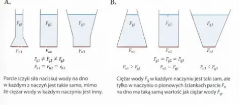
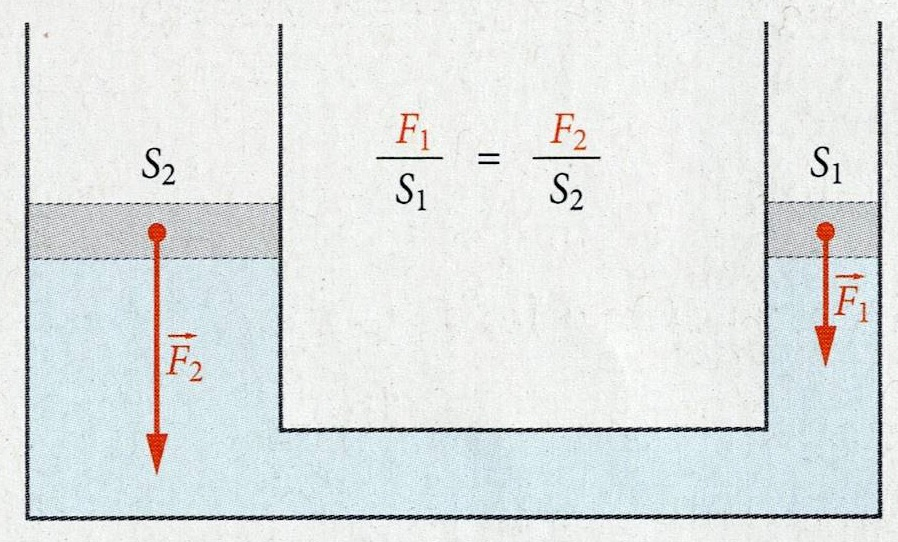
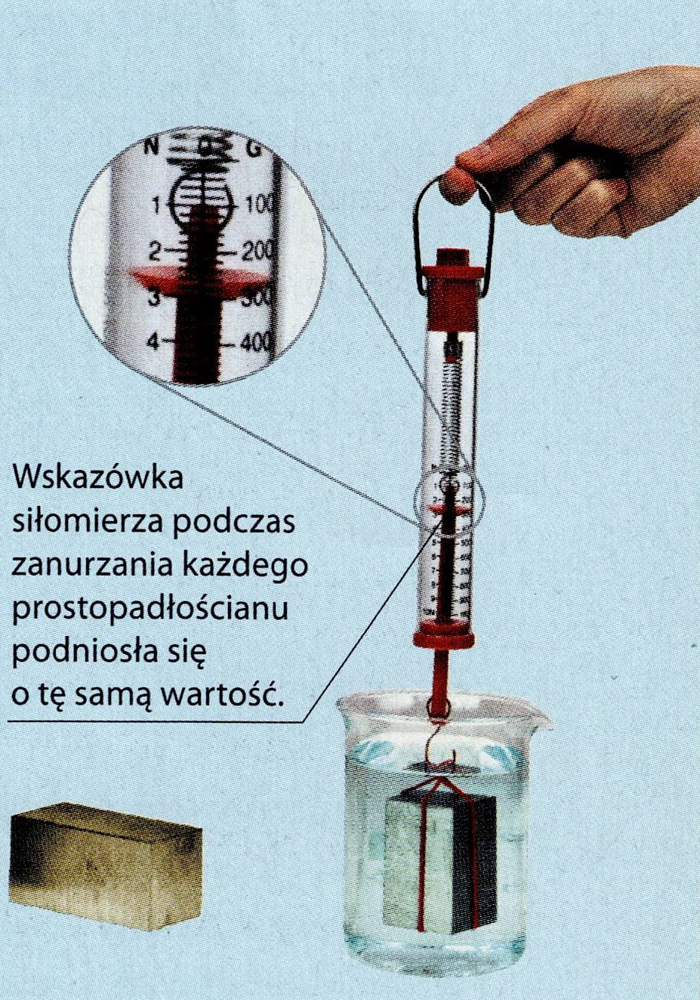
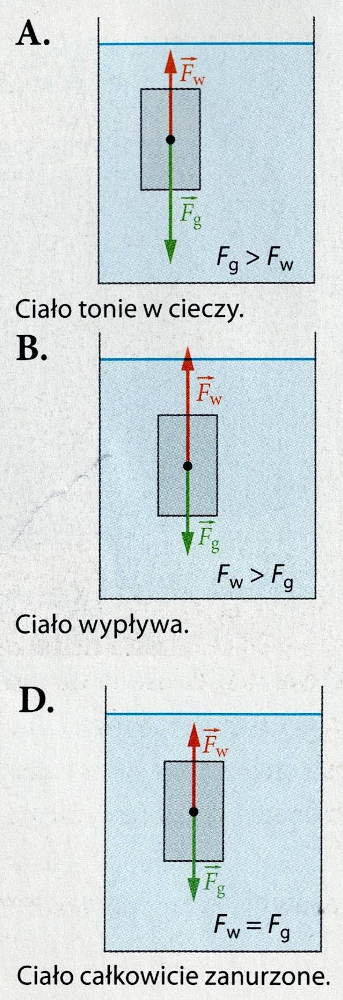

Audio-Lekcje
Posłuchaj, a potem powiedz tacie, co zapamiętałaś.
1. Ciśnienie (Szpilki vs Narty)

p = F / S
Zapamiętaj:
Mała powierzchnia (szpilka) = OGROMNE ciśnienie.
Duża powierzchnia (narta) = Małe ciśnienie.
2. Prawo Pascala (Pasta do zębów)

F₁ / S₁ = F₂ / S₂
Prawo Pascala:
Naciskasz w jednym miejscu -> ciśnienie rozchodzi się wszędzie tak samo.
3. Wypór (Wanna i Archimedes)

Fw = Ciężar wypartej wody
Siła Wyporu:
Działa zawsze do góry.
Zależy od tego, ile wody "wypchnęło" ciało.
4. Pływa czy Tonie?

Zasada:
Gęstość ciała > Gęstość wody = TONIE.
Gęstość ciała < Gęstość wody = PŁYWA.